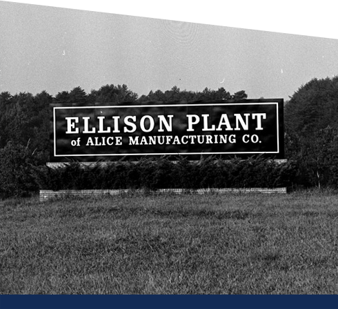

Alice Manufacturing was born in 1923, when manufacturing and mills dotted the American landscape and acted very much as the engine of America.
With an unwavering eye on producing a quality product, a firm belief in the value of superb customer service, and a commitment to stay ahead of trends and technologies, Alice Manufacturing has managed to thrive well into the new millennium.
Our business is strong. And our standards have never been higher.
Today, we manufacture the highest quality fabrics for a wide array of customers and industries including home furnishings, apparel and health care.
Our products are American-made. Our company is American-owned. And we are widely regarded as a global leader in the textile industry.
Yes, Alice is in her 90’s. But you’ll be hard-pressed to find a textile company more nimble, more modern and more professional.
Not just made well.
American made well.
Our business is important to us.
Our associates are important to us.
And our country is important to us.
Alice Manufacturing is proud to call our products American-made. There’s a quality and character about what we produce that reinforces American ingenuity and excellence. You can see it. You can feel it. And your customers will appreciate it.